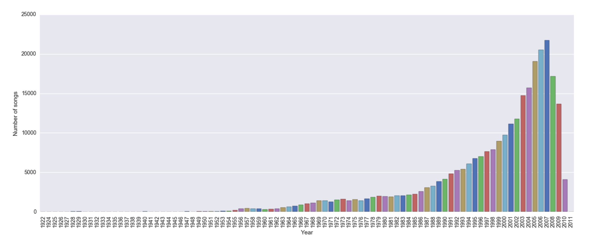
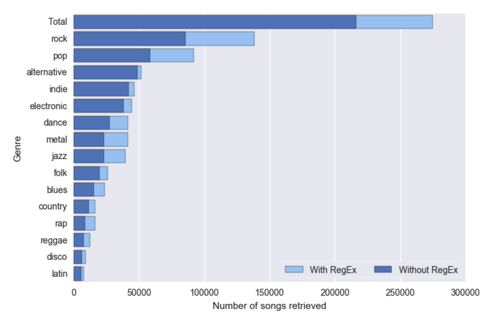

The dataset used is from the Million Song Dataset that is publicly available by Columbia University's LAB ROSA. It contains a collection of audio features and metadata for a million contemporary popular music tracks. The dataset contains information such as audio features, lyrics (represented as a bag of words), song-level tags, artist-level tags, user data, and genre tags.
The complete dataset is 280GB. We decided to use a subset of the data that contained only the information we need for our analysis. Specifically, we needed the following information from each song:
Extracting the data was a bigger challenge than we expected, as we had to combine information that was spread out throughout several datasets and combine them into one. Specifically, we used the followings datasets to extract the information:
Because not every song has genre information and year, our shared song analysis was limited to the 362154 songs that had both genre and year information. For the acoustic analysis, we used only the songs that had all of genre, year, and acoustic information; which totaled only 30036 songs. Since we are taking the average acoustic information for every genre, every year, this provided only a representation of the acoustic information for a genre in a given year. In some years, some genres didn't have any (or very few) songs with acoustic information; therefore the analysis was done to provide an overview and identify possible trends in the acoustics of genres over time.
The data was not complete. Out of the million songs in the whole dataset, only 515576 had yearly information and, out of these, only 362154 had Genre tags. Even though we couldn't use roughly 2/3 of the data, 362k songs is still representative enough to make a statistically significant analysis and, therefore, this didn't affect in great measure the quality of our shared songs analysis.
The data was skewed towards more recent songs, with very few numbers of songs before 1950. For this reason, we decided to do our analysis from 1954 to 2010, and split the analysis by decades to be able to compare relatively (instead of absolutely) how the interaction between genres have changed over time.
The main issue we had with data completeness was for the acoustic data. The first question we tried to answer was how similar were all the genres based on the acoustic features. Looking at the metadata on the database's page, we saw that there were features like "danceability", "energy", "loudness", "hotness" that could have provided good representation to measure the similarity. However, when extracting the data, we noticed that most of these values were missing and were not useful for our analysis.
Because of this, we had to go back and formulate a new question that the data would be able to answer. We then used another database that contained features like "timbre", "loudness", "duration", and "tempo" that provided a very rough parameterization of the song. In this one, only 30036 songs had values with years and genre.
Our new question required the average of the features per genre and decade to find the correlation between genres. Since we only wanted to know the average of these values, 30k songs were to have a good approximation.
The tags on the genres were not coherent, as songs that should have belonged to the same genre had different tags. We originally tried to retrieve the genres based on the name and obtained a total of 216310 songs (~60% of the dataset). Then, we noticed that the same genre had different representations in the data. An example of what we experienced was:
For this reason, in our analysis, we used Regular Expressions to obtain the tags of the songs, and then grouped them together into a single tag. We identified 15 main different genres that, after being grouped, accounted for 274669 songs (~76% of the dataset). We can see the effect of using Regular Expressions on the number of songs retrieved in the following plot. We have around 58k more songs and therefore a better recall of the data.
After grouping them together, the coherence was no longer an issue for our analysis.
The genre tags on the Last.fm database were provided by users of the page and therefore may not be correct. Because we are comparing a very large amount of songs, the effect of having a small number of misclassifications is minimal on the overall analysis. Therefore, a song that was labeled erroneously does not affect the conclusions that we reached in our analysis.
There are many genres that appear only once, which is an indication of noise in the data. When using Regular Expressions, we are able to handle slight variations in the data and ignore tags that are noise.
The data was created by Columbia University's Lab ROSA using several services like Echo Nest, Last FM, musiXmatch, etc. The data is accountable, as we know the origin of every feature.
The only part where we have no accountability is in the genre tags for the songs but, as one song has one or many tags and we selected the top 15 genres, the effect of this does not affect the analysis.
Therefore, we can conclude that the data is accountable and can be used for our analysis.